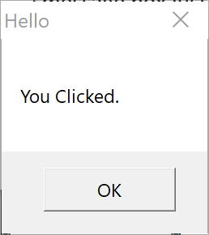
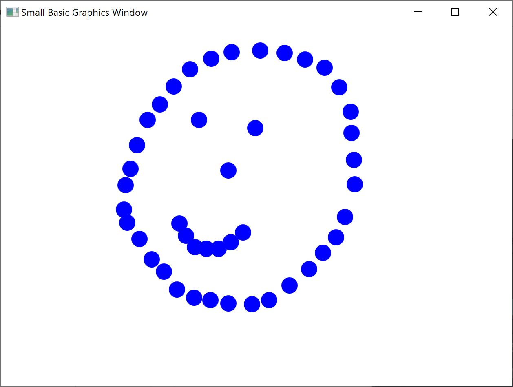
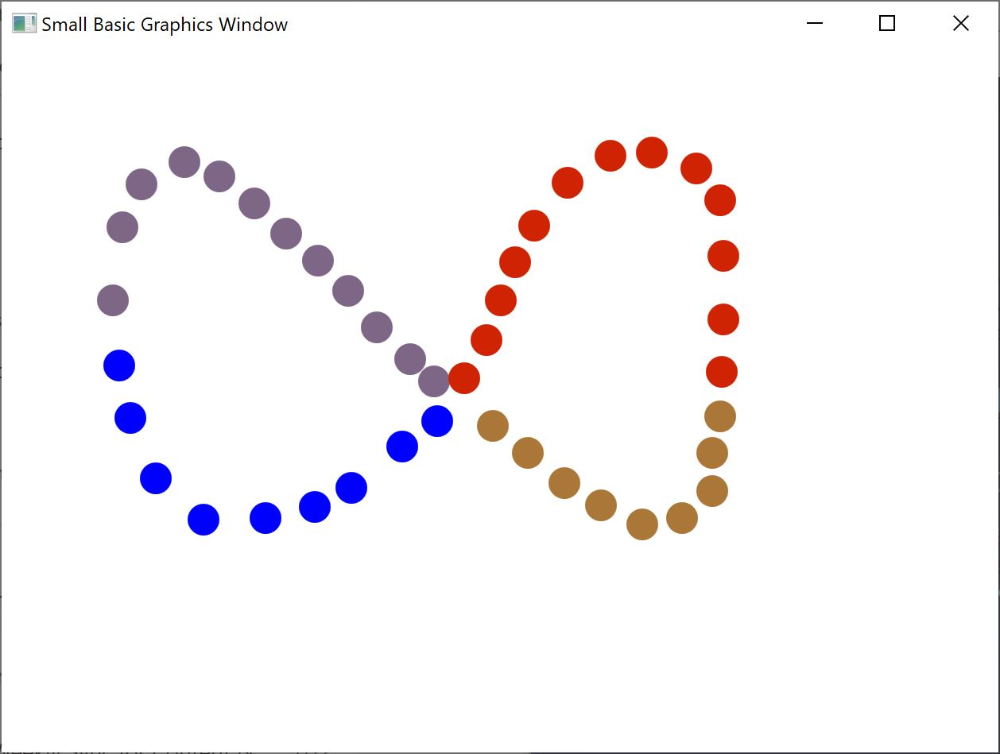

it to make the computer do something; whereas in the case of events, the computer lets you know when something interesting has happened.
Events are central to introducing interactivity in a program. If you want to allow a user to interact with your program, events are what you’ll use. Say, you’re writing a Tic-Tac-Toe game. You’ll want to allow the user to choose his/her play, right? That’s where events come in - you receive user input from within your program using events. If this seems hard to grasp, don’t worry, we’ll take a look at a very simple example that will help you understand what events are and how they can be used.
Below is a very simple program that has just one statement and one subroutine. The subroutine uses the ShowMessage operation on the GraphicsWindow object to display a message box to the user.
GraphicsWindow.MouseDown = OnMouseDown
Sub OnMouseDown
GraphicsWindow.ShowMessage("You Clicked.", "Hello")
EndSubThe interesting part to note in the program above is the line where we assign the subroutine name to the MouseDown event of GraphicsWindow object. You’ll notice that MouseDown looks very much like a property – except that instead of assigning some value, we’re assigning the subroutine OnMouseDown to it. That’s what is special about events – when the event happens, the subroutine is called automatically. In this case, the subroutine OnMouseDown is called every time the user clicks using the mouse, on the GraphicsWindow. Go ahead, run the program and try it out. Anytime you click on the GraphicsWindow with your mouse, you’ll see a message box just like the one shown in the picture below.

Figure 11.1 - Response to an event
This kind of event handling is very powerful and allows for very creative and interesting programs. Programs written in this fashion are often called event-driven programs.
You can modify the OnMouseDown subroutine to do other things than popup a message box. For instance, like in the program below, you can draw big blue dots where the user clicks the mouse.
GraphicsWindow.BrushColor = "Blue"
GraphicsWindow.MouseDown = OnMouseDown
Sub OnMouseDown
x = GraphicsWindow.MouseX - 10
y = GraphicsWindow.MouseY - 10
GraphicsWindow.FillEllipse(x, y, 20, 20)
EndSub
Figure 11.2 - Handling Mouse Down Event
Notice that in the program above, we used MouseX and MouseY to get the mouse co-ordinates. We then use this to draw a circle using the mouse co-ordinates as the center of the circle.
There are really no limits to how many events you want to handle. You can even have one subroutine handle multiple events. However, you can handle an event only once. If you try to assign two subroutines to the same event, the second one wins.
To illustrate this, let’s take the previous example and add a subroutine that handles key presses. Also, let’s make this new subroutine change the color of the brush, so that when you click your mouse, you’ll get a different colored dot.
GraphicsWindow.BrushColor = "Blue"
GraphicsWindow.MouseDown = OnMouseDown
GraphicsWindow.KeyDown = OnKeyDown
Sub OnKeyDown
GraphicsWindow.BrushColor = GraphicsWindow.GetRandomColor()
EndSub
Sub OnMouseDown
x = GraphicsWindow.MouseX - 10
y = GraphicsWindow.MouseY - 10
GraphicsWindow.FillEllipse(x, y, 20, 20)
EndSub
Figure 11.3 - Handling multiple events
If you ran this program and clicked on the window, you’ll get a blue dot. Now, if you press any key once and click again, you’ll get a different colored dot. What’s happening when you press a key is that the subroutine OnKeyDown gets executed which changes the brush color to a random color. After that when you click the mouse, a circle is drawn using the newly set color – giving the random color dots.
Armed with events and subroutines, we can now write a program that lets users draw on the window. It’s surprisingly easy to write such a program, provided we break down the problem into smaller bits. As a first step, let’s write a program that will allow users to move the mouse anywhere on the graphics window, leaving a trail wherever they move the mouse.
GraphicsWindow.MouseMove = OnMouseMove
Sub OnMouseMove
x = GraphicsWindow.MouseX
y = GraphicsWindow.MouseY
GraphicsWindow.DrawLine(prevX, prevY, x, y)
prevX = x
prevY = y
EndSubHowever, when you run this program, the first line always starts from the top left edge of the window (0, 0). We can fix this problem by handling the MouseDown event and capture the prevX and prevY values when that event comes.
Also, we really only need the trail when the user has the mouse button down. Other times, we shouldn’t draw the line. In order to get this behavior, we’ll use the IsLeftButtonDown property on the Mouse object. This property tells whether the Left button is being held down or not. If this value is true, then we’ll draw the line, if not we’ll skip the line.
GraphicsWindow.MouseMove = OnMouseMove
GraphicsWindow.MouseDown = OnMouseDown
Sub OnMouseDown
prevX = GraphicsWindow.MouseX
prevY = GraphicsWindow.MouseY
EndSub
Sub OnMouseMove
x = GraphicsWindow.MouseX
y = GraphicsWindow.MouseY
If (Mouse.IsLeftButtonDown) Then
GraphicsWindow.DrawLine(prevX, prevY, x, y)
EndIf
prevX = x
prevY = y
EndSub